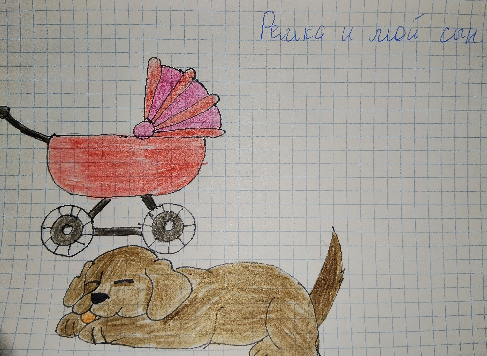

(Рисунок: Собака и красная коляска)

Прошло много лет. Я выросла. У меня родился сын — мой первенец, моя самая большая любовь.
Однажды мы приехали с ним к бабушке. Ему был всего один год. Я вынесла его на улицу в коляске.
Ремка была на цепи. Она увидела нас — и обошла коляску три раза. Медленно, внимательно, будто проверяла, всё ли в порядке.
Потом подошла, лизнула ручку моего сына — осторожно, нежно. И легла рядом с коляской. Лежала и смотрела на меня умными глазами, будто говорила: «Не волнуйся, я присмотрю».
Я смотрела на неё и плакала. Потому что помнила, как сама была маленькой, как дрессировала её, как она клала голову мне на колени. И вот теперь она так же бережёт моего сына.
Ремка словно приняла его в нашу семью. Она охраняла его, как когда-то охраняла меня.
Тогда я ещё не знала, что это было одно из самых светлых воспоминаний, которое останется со мной навсегда. Что через полгода моего сыночка не станет... Но в тот момент, рядом с Ремкой, мы были счастливы и под защитой.